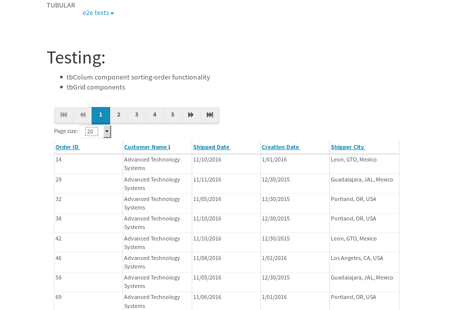
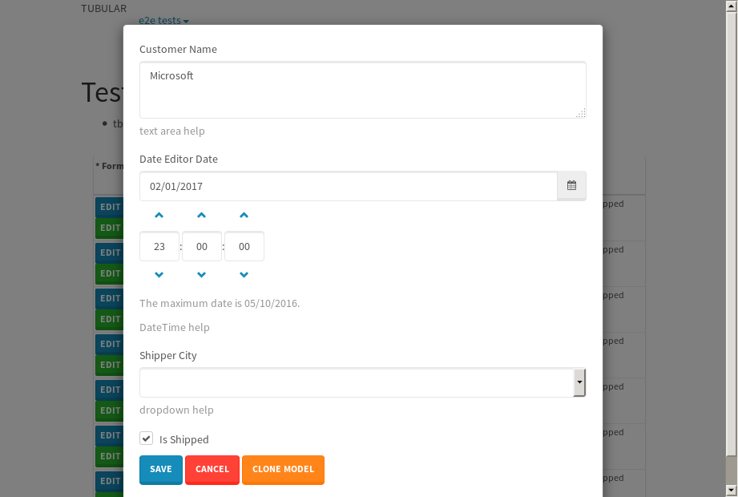
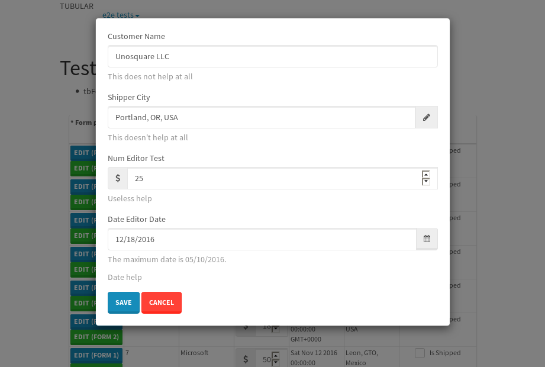
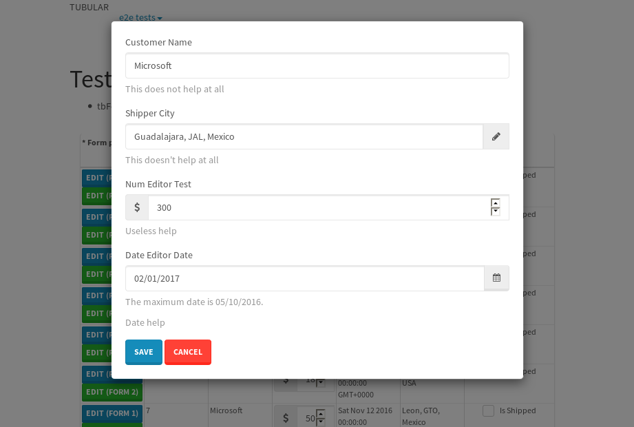
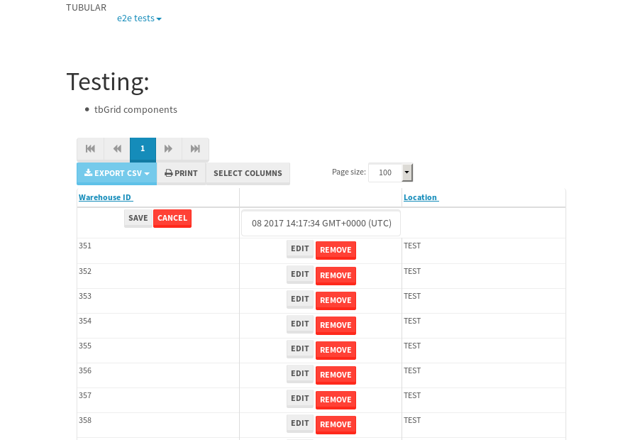

tbColumn.Grid Sorting - 186.746sTests: 5Skipped: 0Failures: 3 should sort data in ascending order then on descending order when sorting by Order Id column - 46.599sExpected '1' to be '500'.✗Expected '20' to be '481'.✗Tests passed: 50.00%should order data in ascending order when click-sorting an unsorted text column - 24.692sTests passed: 100.00%should order data in descending order when click-sorting an ascending-sorted text column - 45.518sExpected 'Advanced Technology Systems' to be 'Vesta'.✗Tests passed: 0.00%should order data in ascending order when click-sorting an unsorted date column - 24.939sTests passed: 100.00%should order data in descending order when click-sorting twice an unsorted date column - 44.991sExpected '12/30/2015' to match /1\/01\/2016/.✗Tests passed: 0.00%
tbEmptyForm - 20.503sTests: 3Skipped: 0Failures: 0 should have an empty required field - 17.158sTests passed: 100.00%should not be able to click on save - 0.034sTests passed: 100.00%should load default value for numeric field - 0.031sTests passed: 100.00%
Tubular Filters.tbColumnFilter - 101.677sTests: 12Skipped: 0Failures: 0 should cancel filtering when clicking outside filter-popover - 7.524sTests passed: 100.00%should disable Value text-input for "None" filter - 6.096sTests passed: 100.00%should disable apply button for "None" filter - 5.989sTests passed: 100.00%should decorate popover button when showing data is being filtered for its column - 11.01sTests passed: 100.00%should correctly filter data for the "Equals" filtering option - 7.314sTests passed: 100.00%should correctly filter data for the "Not Equals" filtering option - 7.165sTests passed: 100.00%should correctly filter data for the "Contains" filtering option - 7.079sTests passed: 100.00%should correctly filter data for the "Not Contains" filtering option - 7.367sTests passed: 100.00%should correctly filter data for the "Starts With" filtering option - 6.919sTests passed: 100.00%should correctly filter data for the "Not Starts With" filtering option - 6.467sTests passed: 100.00%should correctly filter data for the "Ends With" filtering option - 6.561sTests passed: 100.00%should correctly filter data for the "Not Ends With" filtering option - 6.259sTests passed: 100.00%
Tubular Filters.tbColumnDateTimeFilter - 124.988sTests: 12Skipped: 0Failures: 0 should cancel filtering when clicking outside filter-popover - 6.29sTests passed: 100.00%should disable Value text-input for "None" filter - 5.617sTests passed: 100.00%should disable apply button for "None" filter - 5.841sTests passed: 100.00%should clear filtering when clicking on Clean button - 16.941sTests passed: 100.00%should decorate popover button when showing data is being filtered for its column - 10.896sTests passed: 100.00%should correctly filter data for the "Equals" filtering option - 6.192sTests passed: 100.00%should correctly filter data for the "Not Equals" filtering option - 6.496sTests passed: 100.00%should correctly filter data for the "Between" filtering option - 11.233sTests passed: 100.00%should correctly filter data for the "Greater-or-equal" filtering option - 11.071sTests passed: 100.00%should correctly filter data for the "Greater" filtering option - 11.252sTests passed: 100.00%should correctly filter data for the "Less-or-equal" filtering option - 10.887sTests passed: 100.00%should correctly filter data for the "Less" filtering option - 11.042sTests passed: 100.00%
Tubular Filters.tbColumnOptionsFilter - 78.34sTests: 3Skipped: 0Failures: 0 should cancel filtering when clicking outside filter-popover - 7.404sTests passed: 100.00%should decorate popover button when showing data is being filtered for its column - 10.76sTests passed: 100.00%should filter column-elements in accordance to the selected filter when selecting a single option - 48.731sTests passed: 100.00%
Tubular Filters.tbTextSearch - 44.219sTests: 5Skipped: 0Failures: 0 min-chars is not set - 0.075sTests passed: 100.00%should filter data in searchable-column customer name to matching inputted text, starting from 3 characters - 5.978sTests passed: 100.00%should filter data in searchable-column shipper city to matching inputted text, starting from 3 characters - 11.146sTests passed: 100.00%should show clear button when there is inputted text only - 5.678sTests passed: 100.00%should clear filtering when clicking clear button - 15.605sTests passed: 100.00%
tbForm related components.tbCheckboxField - 4.17sTests: 2Skipped: 0Failures: 1 should save changes on "SAVE" - 1.272sExpected 51 to be -1.✗Tests passed: 50.00%should discard changes on "CANCEL" - 1.15sTests passed: 100.00%
tbForm related components.tbDropDownEditor - 5.919sTests: 5Skipped: 0Failures: 1 should set initial input value to the value of "value" attribute when defined - 0.771sTests passed: 100.00%should show the component name value in a label field when "showLabel" attribute is true - 0.752sTests passed: 100.00%should show a help field equal to this attribute, is present - 0.751sTests passed: 100.00%should submit modifications to item/server when clicking form "Save" - 1.411sExpected 'string:Guadalajara, JAL, Mexico' to match 'string:Portland, OR, USA'.✗Tests passed: 50.00%should NOT submit modifications to item/server when clicking form "Cancel" - 1.224sTests passed: 100.00%
tbForm related components.tbTextArea - 8.316sTests: 7Skipped: 0Failures: 1 should set initial input value to the value of "value" attribute when defined - 0.759sTests passed: 100.00%should be invalidated when the number of chars is not in the range of "min" and "max" attributes - 1.199sTests passed: 100.00%should show the component name value in a label field when "showLabel" attribute is true - 0.801sTests passed: 100.00%should show a help field equal to this attribute, is present - 0.856sTests passed: 100.00%should require the field when the attribute "required" is true - 1.232sTests passed: 100.00%should submit modifications to item/server when clicking form "Save" - 1.4sExpected 'Microsoft' to match 'Apple'.✗Tests passed: 0.00%should NOT submit modifications to item/server when clicking form "Cancel" - 1.291sTests passed: 100.00%
tbForm related components.tbDateEditor - 7.258sTests: 6Skipped: 0Failures: 1 should set initial date value to the value of "value" attribute when defined - 0.726sTests passed: 100.00%should be invalidated when the date is not in the range of "min" and "max" attributes - 1.4sTests passed: 100.00%should show the component name value in a label field when "showLabel" attribute is true - 1.41sTests passed: 100.00%should show a help field equal to this attribute, is present - 0.744sTests passed: 100.00%should submit modifications to item/server when clicking form "Save" - 0.964sExpected false to be true.✗Tests passed: 0.00%should NOT submit modifications to item/server when clicking form "Cancel" - 1.243sTests passed: 100.00%
tbForm related components.tbTypeaheadEditor - 14.571sTests: 7Skipped: 0Failures: 1 should show an options list when there is an API-info/component entered-data - 1.688sTests passed: 100.00%should select the option clicked - 1.479sTests passed: 100.00%should show a "delete" button when an option/match is selected, and delete the option if button is clicked - 2.158sTests passed: 100.00%should show a label value equal to the component name when "showLabel" attribute is true - 1.082sTests passed: 100.00%should require a value when "require" attribute is true - 3.678sTests passed: 100.00%should submit modifications to item/server when clicking form "Save" - 1.671sExpected 'Guadalajara, JAL, Mexico' to match 'Portland, OR, USA'.✗Tests passed: 0.00%should NOT submit modifications to item/server when clicking form "Cancel" - 1.817sTests passed: 100.00%
tbForm related components.tbSimpleEditor - 8.657sTests: 9Skipped: 0Failures: 1 should set initial input value to the value of "value" attribute when defined - 0.65sTests passed: 100.00%should be invalidated when the number of chars is not in the range of "min" and "max" attributes - 1.293sTests passed: 100.00%should show the component name value in a label field when "showLabel" attribute is true - 0.735sTests passed: 100.00%should set input placeholder to the value of "placeholder" attribute - 0.921sTests passed: 100.00%should validate the control using the "regex" attribute, if present - 0.789sTests passed: 100.00%should show a help field equal to this attribute, is present - 0.624sTests passed: 100.00%should require the field when the attribute "required" is true - 0.804sTests passed: 100.00%should submit modifications to item/server when clicking form "Save" - 0.949sExpected 'Unosquare LLC' to match 'UNOS22'.✗Tests passed: 0.00%should NOT submit modifications to item/server when clicking form "Cancel" - 1.245sTests passed: 100.00%
tbForm related components.tbNumericEditor - 7.182sTests: 7Skipped: 0Failures: 1 should set initial component value to the value of "value" attribute when defined - 0.631sTests passed: 100.00%should be invalidated when the entered number is not in the range of "min" and "max" attributes - 1.291sTests passed: 100.00%should show the component name value in a label field when "showLabel" attribute is true - 0.77sTests passed: 100.00%should show a help field equal to this attribute, is present - 0.69sTests passed: 100.00%should require the field when the attribute "required" is true - 0.84sTests passed: 100.00%should submit modifications to item/server when clicking form "Save" - 1.03sExpected '300' to match '100'.✗Tests passed: 0.00%should NOT submit modifications to item/server when clicking form "Cancel" - 1.287sTests passed: 100.00%
tbForm Connection Error NoModelKey - 3.87sTests: 1Skipped: 0Failures: 0 tbForm connection error functionality - 0.004sTests passed: 100.00%
tbForm Connection Error NoServerUrl - 3.59sTests: 1Skipped: 0Failures: 0 tbForm connection error functionality - 0.003sTests passed: 100.00%
tbGridComponents - 31.08sTests: 6Skipped: 0Failures: 4 should add item with newRow method - 4.549sExpected '396 EDIT REMOVE TEST' not to be '396 EDIT REMOVE TEST'.✗Tests passed: 50.00%should add item with newRow method and cancel action - 0.323sFailed: ElementNotVisibleError✗Tests passed: 0.00%should update item with tbSaveButton - 0.977sExpected '' to be 'TEST'.✗Tests passed: 0.00%should NOT update item on cancel Update action - 0.515sFailed: ElementNotVisibleError✗Tests passed: 0.00%should remove item with tbRemoveButton - 20.765sTests passed: 100.00%should NOT remove item on cancel Remove action - 0.731sTests passed: 100.00%
tbGridPager.navigation buttons - 2.854sTests: 1Skipped: 0Failures: 0 should perform no action when clicking on the numbered navigation button corresponding to the current-showing results page - 0.652sTests passed: 100.00%
tbGridPager.navigation buttons.first/non-last results page related functionality - 0.788sTests: 2Skipped: 0Failures: 0 should disable "first" and "previous" navigation buttons when in first results page - 0.108sTests passed: 100.00%should enable "last" and "next" navigation buttons when in a results page other than last - 0.679sTests passed: 100.00%
tbGridPager.navigation buttons.last/non-first results page related functionality - 1.414sTests: 2Skipped: 0Failures: 0 should disable "last" and "next" navigation buttons when in last results page - 0.704sTests passed: 100.00%should enable "first" and "previous" navigation buttons when in a results page other than first - 0.709sTests passed: 100.00%
tbGridPager.page navigation - 4.481sTests: 5Skipped: 0Failures: 0 should go to next results page when clicking on next navigation button - 1.203sTests passed: 100.00%should go to previous results page when clicking on previous navigation button - 1.2sTests passed: 100.00%should go to last results page when clicking on last navigation button - 0.733sTests passed: 100.00%should go to first results page when clicking on first navigation button - 0.704sTests passed: 100.00%should go to corresponding results page when clicking on a numbered navigation button - 0.641sTests passed: 100.00%
tbGridPagerInfo - 7.07sTests: 2Skipped: 0Failures: 0 should show text in accordance to numbered of filter rows and current results-page - 2.174sTests passed: 100.00%should show count in footer - 0.034sTests passed: 100.00%
tbPageSizeSelctor - 14.967sTests: 4Skipped: 0Failures: 0 should filter up to 10 data rows per page when selecting a page size of "10" - 3.043sTests passed: 100.00%should filter up to 20 data rows per page when selecting a page size of "20" - 2.549sTests passed: 100.00%should filter up to 50 data rows per page when selecting a page size of "50" - 3.095sTests passed: 100.00%should filter up to 100 data rows per page when selecting a page size of "100" - 2.693sTests passed: 100.00%
tbSingleForm - 29.661sTests: 8Skipped: 1Failures: 1 should load correct info - 0s***Skipped***Tests passed: 0%should change customer name - 3.843sTests passed: 100.00%should save it - 4.516sExpected '' to be 'Saved'.✗Expected '' to be 'Saved'.✗Tests passed: 0.00%should clear the inputs - 4.564sTests passed: 100.00%should update - 4.127sTests passed: 100.00%should reset editor - 4.016sTests passed: 100.00%should not save if not Changes - 4.034sTests passed: 100.00%should not be able to click on save - 4.56sTests passed: 100.00%


{kind=link}
{kind=link}
{kind=link}
{kind=link}
{kind=link}
{kind=link}